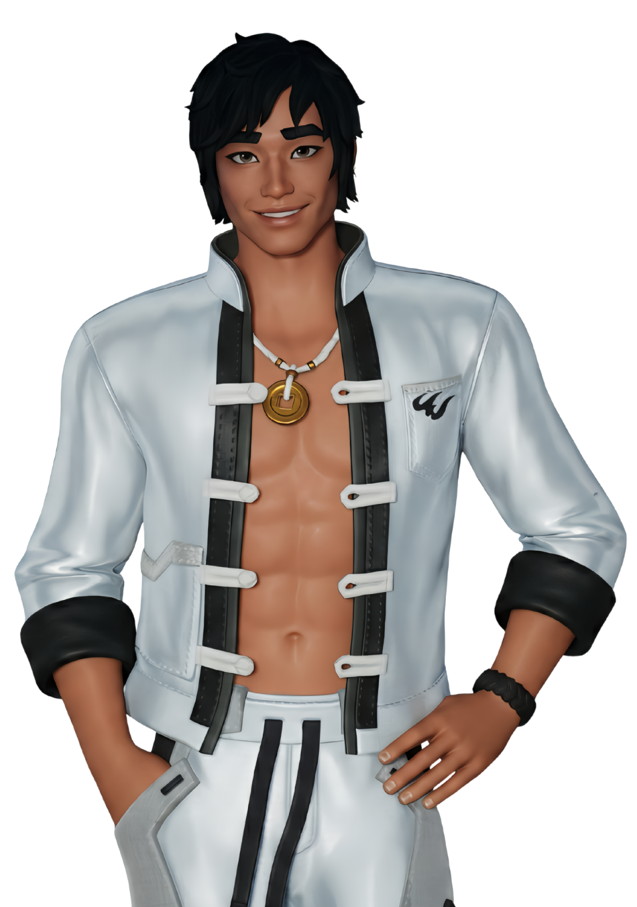
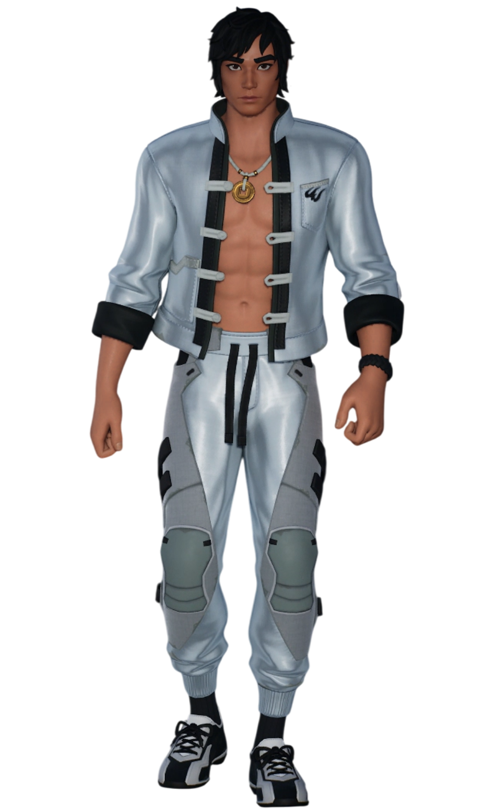
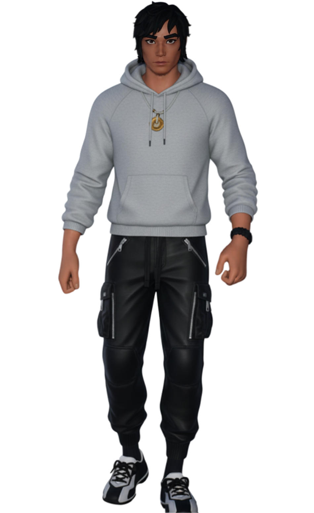
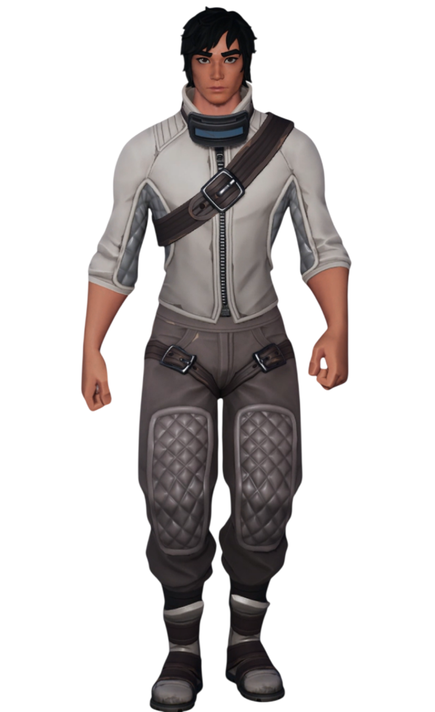

Damian
// Archives Biographiques
La Star de Fontainewood
Originaire de la prestigieuse "Côte Dorée", le cœur de l'industrie cinématographique de Fontainewood, Damian menait une vie à cent à l'heure. Acteur et cascadeur spécialisé dans les films d'action, il partageait cette passion dévorante avec son petit frère Léo. Doté d'une musculature imposante, reconnaissable à sa casquette blanche et sa veste argentée grande ouverte, Damian est un jeune homme au tempérament chaleureux, protecteur et doté d'un indéfectible sens de la famille.
La Chute de la Côte Dorée
Leur rêve hollywoodien a brutalement pris fin lors du tournage du blockbuster "Peelian 2". Une armada de soucoupes volantes extraterrestres a envahi le ciel, bombardant la ville de projectiles énergétiques. Piégés dans l'apocalypse de la Dernière Réalité, Damian et Léo n'ont dû leur survie qu'en se terrant dans les décombres de leur monde en flammes. Frappés par ce cataclysme et séparés de tous leurs amis, les deux frères se sont réveillés seuls et désorientés sur les plaines irréelles d'Astéria.
Le Protecteur du Clan
C'est dans les forêts d'Astéria qu'il a croisé la route de Loper, effondrée et brisée par la perte de ses propres proches. Touché par sa détresse, Damian est devenu son roc, nouant avec elle un lien romantique profond et inattendu. En rejoignant le "Clan du Soleil", il se rapproche naturellement de Barret, partageant avec lui cet instinct viscéral de grand frère protecteur. Toujours prêt à foncer tête baissée pour défendre les siens, il fait de la survie de son nouveau groupe sa priorité absolue.
Séparation dans le Vide
Lors de la mission désespérée au Temple Zéro pour contrecarrer les plans de l'entité cubique et de l'Institut, la réalité elle-même s'est effondrée. Une onde de choc du Point Zéro a fracturé le sol d'Astéria, scindant l'île en débris flottant dans le vide spatial. Cette division soudaine a arraché Damian à son frère Léo et à Loper, le laissant dériver seul vers l'inconnu, sous les cris déchirants de celle qu'il s'était juré de ne jamais abandonner.
// Variantes Visuelles


